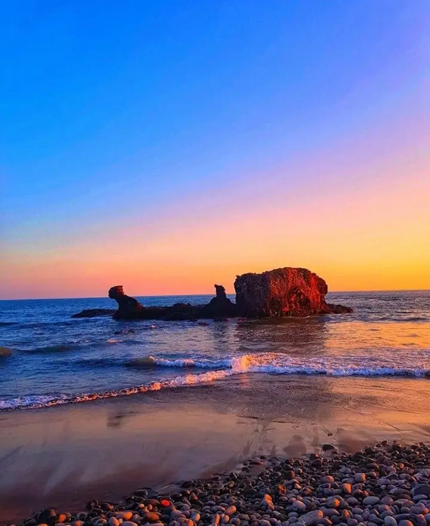

Nuestros servicios 24/7
Servicio de Taxis en El Salvador, Aeropuerto y Transporte VIP
Cobertura nacional con unidades modernas, aire acondicionado y conductores profesionales en todo el territorio salvadoreño.

Taxis Aeropuerto El Salvador (SAL)
Recogida puntual en el Aeropuerto Internacional de El Salvador (Comalapa). Te llevamos directo y seguro hacia San Salvador, Surf City, El Tunco, Costa del Sol o cualquier departamento del país las 24 horas.
Reservar taxi al aeropuerto
Taxis en Surf City, El Tunco y San Salvador
¿Necesitas moverte entre San Salvador y las playas de La Libertad? Somos tu taxi de confianza en El Tunco, El Zonte, El Sunzal, Santa Tecla y Zona Rosa. Viajes seguros de día y de madrugada.
Pedir mi taxi ahora
Transporte Turístico y Tours Guiados
Recorre todo El Salvador con chofer privado: Ruta de las Flores, Lago de Coatepeque, Volcán Ilamatepec, Centro Histórico de San Salvador y viajes privados hacia Guatemala y Honduras.
Ver todos los tours